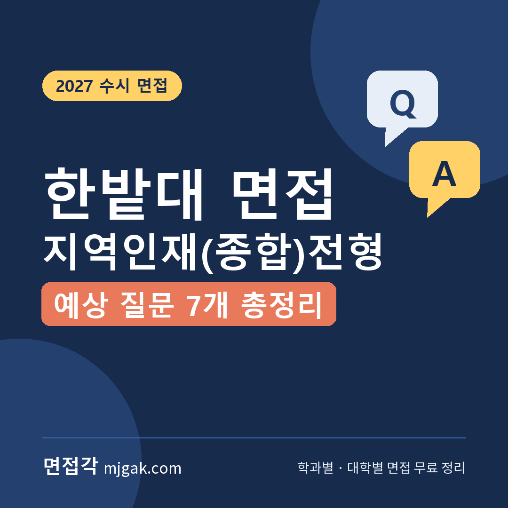
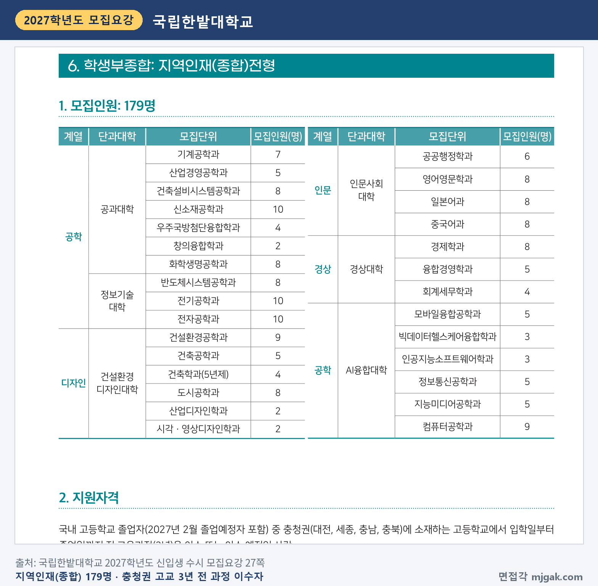
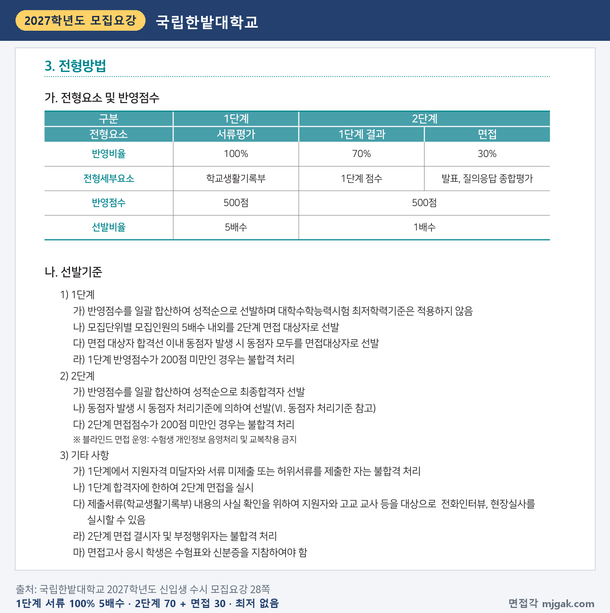
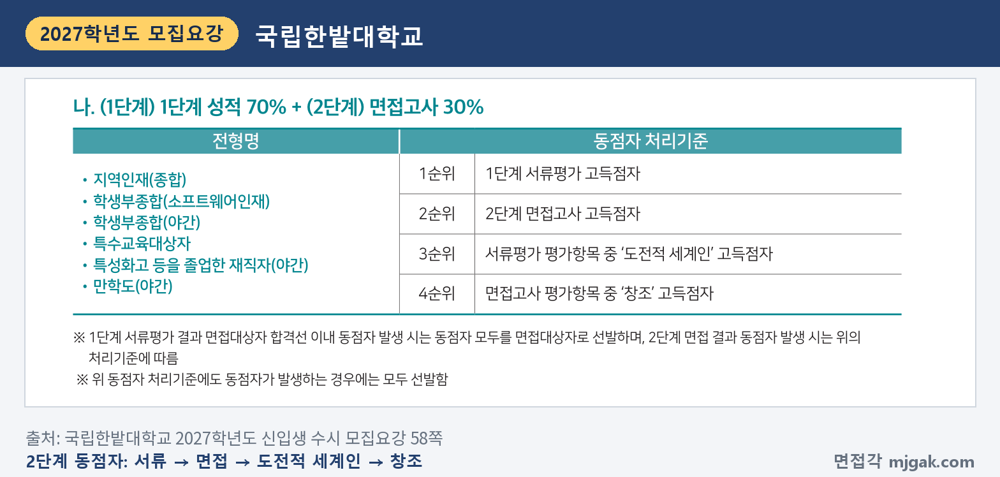
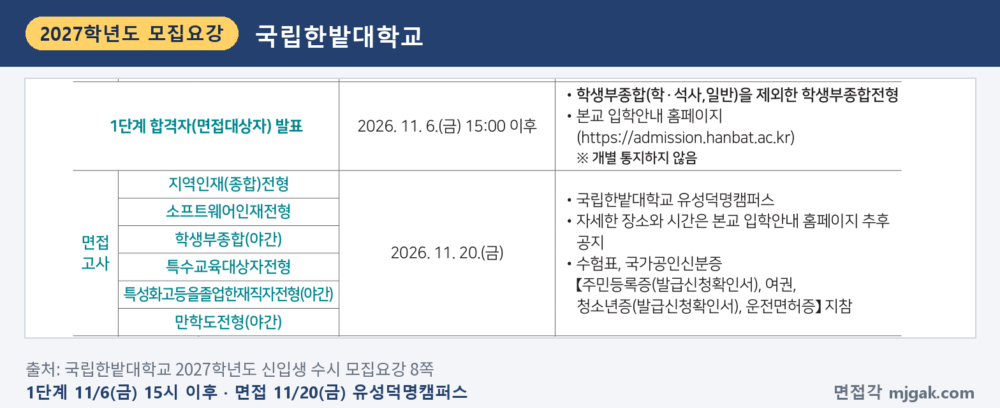
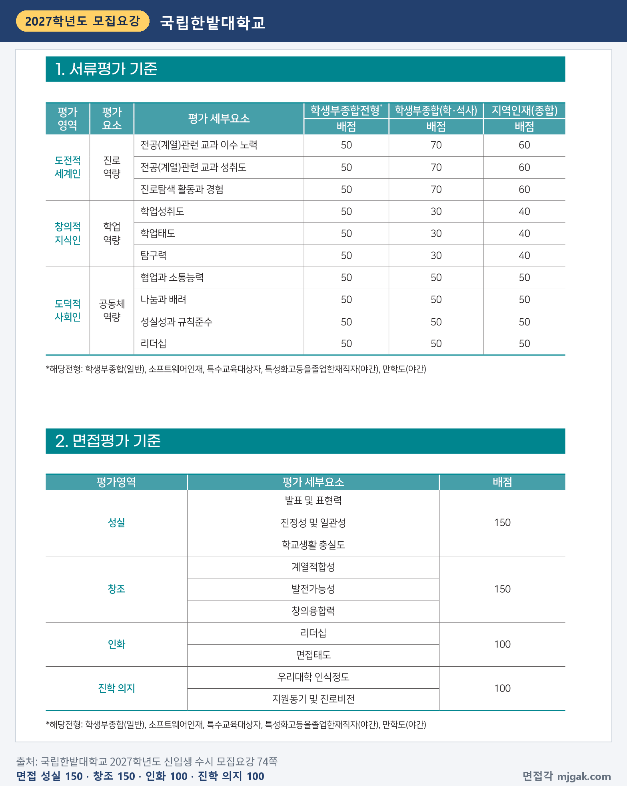
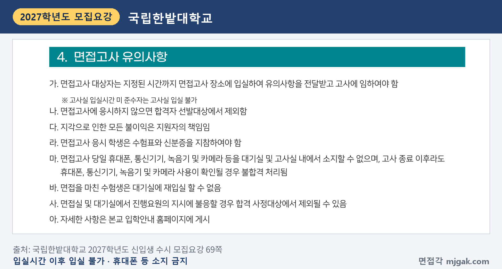
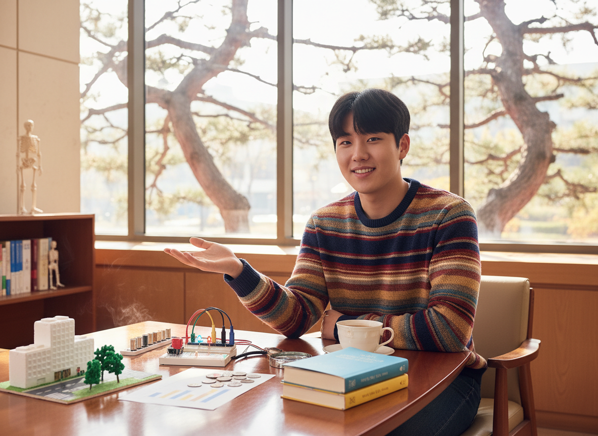
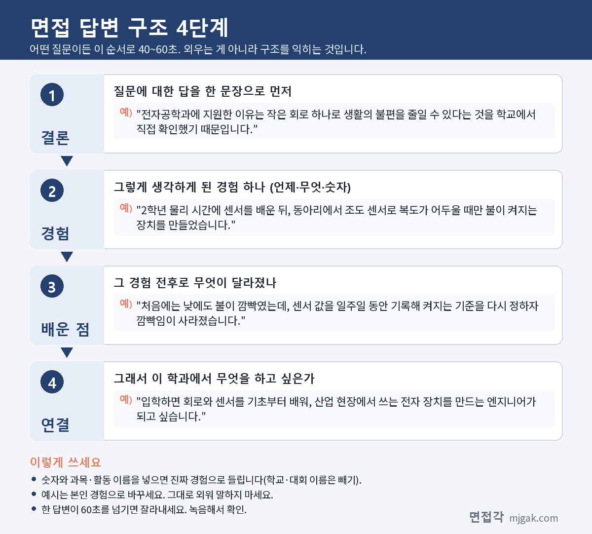
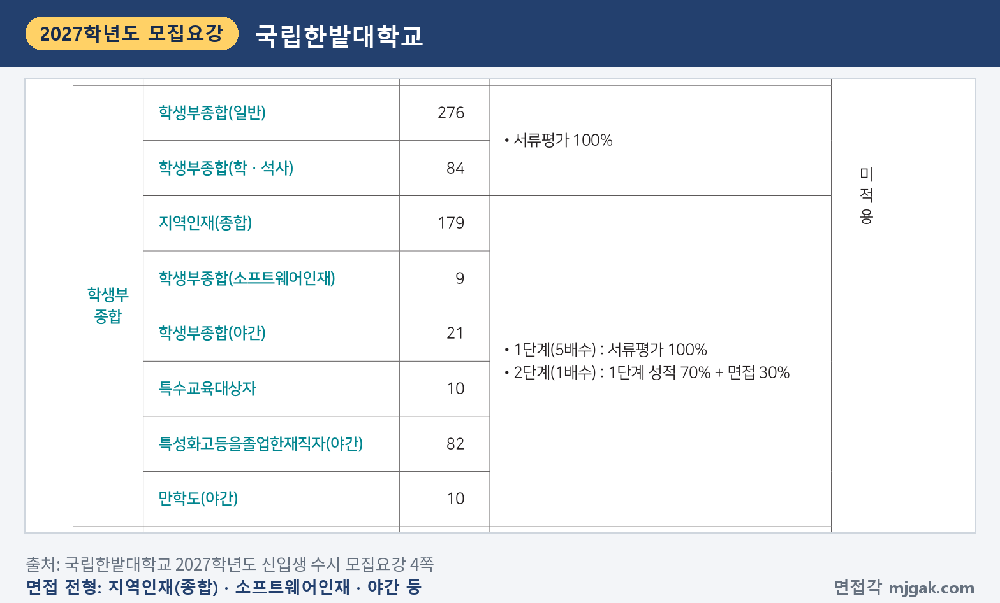

Ctrl+V (서식 유지됨)제목
본문 (이 영역 전체가 복사됩니다)
📷 여기에 이미지 넣기 — 썸네일 — thumb-hanbat.png (대표 이미지로 지정)
국립한밭대 지역인재(종합)전형에서 일정상 먼저 챙길 것은 면접이 수능 다음 날이라는 점입니다. 1단계 합격자 발표는 수능 전인 11월 6일(금) 15:00 이후, 수능은 11월 19일(목), 면접은 11월 20일(금)입니다. 그래서 답변과 발표 연습은 수능 전에 끝내 두어야 합니다. 지역인재(종합)는 179명을 뽑고, 1단계 서류평가 100%로 5배수 내외를 고른 뒤 2단계에서 1단계 성적 70%와 면접 30%를 합산합니다. 면접은 "발표, 질의응답 종합평가"이고 블라인드로 진행합니다. 이 글은 국립한밭대학교 2027학년도 신입생 수시 모집요강을 바탕으로 지역인재(종합)의 전형 방법과 일정, 면접 평가 기준, 예상 질문 7개, 준비 순서를 정리하고, 같은 날 면접을 보는 다른 전형은 한 구역으로 묶었습니다. 대전·세종·충남·충북 고교에서 지역인재(종합)에 지원한 고3과 재수생이 읽으시면 됩니다.
1. 지역인재(종합)전형, 2027학년도에는 어떻게 보나
지역인재(종합)는 학생부종합전형으로 179명을 뽑습니다. 인원이 많은 곳은 신소재공학과·전기공학과·전자공학과 각 10명, 컴퓨터공학과·건설환경공학과 각 9명, 건축설비시스템공학과·화학생명공학과·반도체시스템공학과·도시공학과·영어영문학과·일본어과·중국어과·경제학과 각 8명입니다(27쪽). 지원자격은 충청권(대전, 세종, 충남, 충북)에 있는 고등학교에서 입학일부터 졸업일까지 전 교육과정(3년)을 이수했거나 이수 예정인 사람이고, 검정고시 출신자와 외국고 졸업자, 대안학교·영재학교 등은 지원할 수 없습니다(27쪽).
📷 여기에 이미지 넣기 — 캡처 1 — 국립한밭대학교 2027학년도 신입생 수시 모집요강 27쪽: hanbat-2027-units.png
1단계는 학교생활기록부 서류평가 100%(500점)로 모집인원의 5배수 내외를 뽑고, 2단계는 1단계 성적 70%와 면접 30%를 합산합니다(500점). 수능최저학력기준은 없습니다(28쪽). 이 글에서 계산하면 10명을 뽑는 신소재공학과·전기공학과·전자공학과는 1단계 합격 규모가 50명 안팎입니다. 합격선 안에 동점자가 있으면 모두 면접대상자로 뽑으므로(28쪽) 실제 인원은 더 많을 수 있습니다.
1단계 반영점수가 200점 미만이거나 2단계 면접점수가 200점 미만이면 불합격이고, 면접에 결시하면 불합격입니다(28쪽). 대학은 학생부 내용의 사실 확인을 위해 지원자와 고교 교사 등에게 전화인터뷰나 현장실사를 할 수 있습니다(28쪽).
📷 여기에 이미지 넣기 — 캡처 2 — 국립한밭대학교 2027학년도 신입생 수시 모집요강 28쪽: hanbat-2027-method.png
2단계 동점자는 1단계 서류평가 점수, 2단계 면접 점수, 서류평가 '도전적 세계인' 점수, 면접 '창조' 점수 순으로 가립니다(58쪽). 학교폭력 조치사항은 1단계 서류평가 총점에서 감점합니다(66쪽). 주요 변경사항(5쪽)에 지역인재(종합)만 바뀐 항목은 없고, 학교폭력 감점 점수는 모든 전형에서 커졌습니다.
📷 여기에 이미지 넣기 — 캡처 3 — 국립한밭대학교 2027학년도 신입생 수시 모집요강 58쪽: hanbat-2027-tie.png
2. 언제 보나: 1단계는 수능 전, 면접은 수능 다음 날
일정은 날짜순으로 이렇습니다(수능일 외 8쪽).
- 11월 6일(금) 15:00 이후: 1단계 합격자(면접대상자) 발표, 입학안내 홈페이지(admission.hanbat.ac.kr), 개별 통지하지 않음
- 11월 19일(목): 수능
- 11월 20일(금): 면접, 유성덕명캠퍼스
- 12월 18일(금) 15:00 이후: 최초 합격자 발표
- 12월 21일(월) 10:00 ~ 23일(수) 16:00: 합격자 등록(문서등록)
1단계 발표에서 수능까지 13일, 면접까지 14일입니다(이 글에서 계산한 값). 면접 장소와 시간은 입학안내 홈페이지에 추후 공지하고, 수험표와 국가공인신분증을 가져가야 합니다(8쪽).
📷 여기에 이미지 넣기 — 캡처 4 — 국립한밭대학교 2027학년도 신입생 수시 모집요강 8쪽: hanbat-2027-schedule.png
3. 면접은 어떻게 보나
면접의 전형세부요소는 "발표, 질의응답 종합평가"입니다(28쪽). 면접평가 기준은 4개 영역, 500점입니다(74쪽).
- 성실 150점: 발표 및 표현력, 진정성 및 일관성, 학교생활 충실도
- 창조 150점: 계열적합성, 발전가능성, 창의융합력
- 인화 100점: 리더십, 면접태도
- 진학 의지 100점: 우리대학 인식정도, 지원동기 및 진로비전
모집요강의 면접평가 기준표는 하나뿐이고, 표 아래 '해당전형' 표기에는 지역인재(종합)가 적혀 있지 않습니다(74쪽). 이 글은 이 표로 준비하니, 입학안내 홈페이지 안내를 함께 확인하세요. 면접 시간, 면접위원 수, 발표 준비 시간은 모집요강에 없습니다.
서류평가에서 지역인재(종합)는 진로역량(도전적 세계인) 3개 요소가 각 60점, 학업역량(창의적 지식인) 3개 요소가 각 40점, 공동체역량(도덕적 사회인) 4개 요소가 각 50점입니다(74쪽). 이 글에서 더하면 진로역량 180점, 학업역량 120점, 공동체역량 200점입니다.
📷 여기에 이미지 넣기 — 캡처 5 — 국립한밭대학교 2027학년도 신입생 수시 모집요강 74쪽: hanbat-2027-eval.png
면접은 수험생 개인정보를 음영처리하고 교복 착용을 금지하는 블라인드 면접입니다(28쪽). 입실시간을 지키지 않으면 고사실에 들어갈 수 없고, 휴대폰·통신기기·녹음기·카메라는 대기실과 고사실에 가지고 있을 수 없습니다. 면접을 마치면 대기실에 다시 들어갈 수 없습니다(69쪽).
📷 여기에 이미지 넣기 — 캡처 6 — 국립한밭대학교 2027학년도 신입생 수시 모집요강 69쪽: hanbat-2027-notice.png
4. 평가 항목에서 나올 예상 질문 7개와 답변법
모집요강에는 면접 질문 예시가 없습니다. 입학안내 홈페이지 수시모집 자료실에 「국립한밭대학교 수시모집 학생부종합전형 면접 공통 주제(2025, 2026)」(2026년 4월 1일 게시)가 있으니 지난 공통 주제는 그 게시물에서 직접 확인하세요. 아래 7개는 74쪽 면접평가 항목으로 정리한 예상 질문입니다. "○○"에는 내 학생부의 과목과 활동이 들어갑니다. 예시 답변은 모집단위를 바꿔 쓴 가상의 예시이니 본인 경험으로 바꾸세요.
▶ 질문 1. ○○학과에 지원한 이유와 입학 후 계획을 말해 보세요. (진학 의지: 지원동기 및 진로비전)
왜 묻나: '진학 의지'의 평가 세부요소에 "지원동기 및 진로비전"이 있습니다.
답변 구조: 지원 이유 한 문장 → 관심을 확인한 학교생활 장면 → 그때 바꾼 것과 결과 → 입학 후 계획.
답변 예시 (전자공학과):
"전자공학과에 지원한 이유는 작은 회로 하나로 생활의 불편을 줄일 수 있다는 것을 학교에서 직접 확인했기 때문입니다. 2학년 물리 시간에 센서를 배운 뒤, 동아리에서 조도 센서로 복도가 어두울 때만 불이 켜지는 장치를 만들었습니다. 처음에는 낮에도 불이 깜빡였는데, 센서 값을 일주일 동안 기록해 켜지는 기준을 다시 정하자 깜빡임이 사라졌습니다. 입학하면 회로와 센서를 기초부터 배워, 산업 현장에서 쓰는 전자 장치를 만드는 엔지니어가 되고 싶습니다."
주의: "어릴 때부터 좋아해서"로 끝내지 말고, 관심을 확인한 장면을 붙이세요.
▶ 질문 2. 우리 대학과 지원 학과에 대해 알고 있는 것을 말해 보세요. (진학 의지: 우리대학 인식정도)
왜 묻나: '진학 의지'에 "우리대학 인식정도"가 들어 있습니다.
답변 구조: 확인한 사실 한두 개 → 그 사실이 내 관심과 맞는 이유 → 입학 후 먼저 할 일.
답변 예시 (반도체시스템공학과):
"모집요강을 보면 반도체시스템공학과는 정보기술대학에 있고, 같은 단과대학에 전기공학과와 전자공학과가 함께 있습니다. 반도체를 만드는 공정과 그 칩을 쓰는 전기·전자 분야가 이어져 있다고 생각해서, 가까운 학과와 함께 배울 수 있다는 점을 눈여겨봤습니다. 학과 홈페이지의 교육과정표에서 1학년 ○○ 과목도 확인했습니다. 화학 시간에 배운 산화 반응이 반도체 공정에도 쓰인다는 것을 알고 더 찾아본 경험을 살려, 그 과목부터 꼼꼼히 공부하겠습니다."
주의: 교수 이름이나 취업률처럼 확인하지 않은 정보는 말하지 마세요.
▶ 질문 3. 학생부의 ○○ 활동에서 본인이 직접 한 일은 무엇인가요? (성실: 진정성 및 일관성, 학교생활 충실도)
왜 묻나: '성실'에 "진정성 및 일관성"과 "학교생활 충실도"가 있습니다.
답변 구조: 활동 주제 한 문장 → 내가 맡은 일 → 막힌 점과 해결 → 결과와 진로에 준 영향.
답변 예시 (신소재공학과):
"2학년 화학 탐구 활동에서 모둠이 일회용 컵 재질에 따라 뜨거운 물을 부었을 때 모양이 얼마나 변하는지 조사했고, 저는 실험 조건을 정하고 결과를 표로 정리하는 일을 맡았습니다. 처음에는 물 온도를 재지 않아 같은 컵도 결과가 매번 달랐습니다. 그래서 물을 80도에 맞추고 컵마다 세 번씩 다시 재자 재질별 차이가 분명하게 보였습니다. 같은 모양이라도 재료에 따라 견디는 정도가 다르다는 것을 확인하고 신소재공학과에 관심이 커졌습니다."
주의: 학생부에 적힌 것보다 부풀리지 말고, "저는 ○○을 맡았습니다"로 시작하세요.
📷 여기에 이미지 넣기 — 이미지 1 — 제미나이 생성: 창밖으로 소나무가 보이는 늦가을 캠퍼스 라운지에서 LED 회로 키트·금속 시편·도시 모형·동전과 막대그래프·영어 원서 옆에서 답하는 남학생(실사) / "제미나이 프롬프트 1" · gem-hanbat-1.png
(AI로 만든 이미지로, 실제 캠퍼스와 다를 수 있습니다)
▶ 질문 4. 지원 학과와 관련해 가장 깊이 공부한 내용을 설명해 보세요. (창조: 계열적합성)
왜 묻나: '창조'의 평가 세부요소에 "계열적합성"이 있습니다.
답변 구조: 과목과 주제 한 문장 → 수업에서 생긴 궁금증 → 스스로 더 해 본 것 → 학과 공부와 연결.
답변 예시 (경제학과):
"가장 깊이 공부한 것은 경제 시간에 배운 물가입니다. 물가가 오르면 같은 돈으로 살 수 있는 양이 줄어든다고 배웠는데, 매점 과자가 값은 그대로인데 양이 줄었다는 친구 말을 듣고 궁금해졌습니다. 포장지의 무게로 그램당 가격을 계산해 보니 1년 전보다 올라 있었고, 이 내용을 학급 신문에 짧게 썼습니다. 경제학과에서 가격 변화가 소비자의 선택에 주는 영향을 숫자로 분석하는 방법을 배우고 싶습니다."
주의: 교과서 설명은 짧게, 내가 궁금했던 것과 해 본 일에 시간을 쓰세요.
▶ 질문 5. 서로 다른 과목에서 배운 것을 묶어 문제를 풀어 본 경험이 있나요? (창조: 창의융합력, 발전가능성)
왜 묻나: '창조'에 "창의융합력"과 "발전가능성"이 들어 있습니다.
답변 구조: 묶은 과목 두 개와 문제 → 각각에서 가져온 것 → 결과 → 학과에서 이어 갈 공부.
답변 예시 (도시공학과):
"통합사회와 수학에서 배운 것을 묶어 학교 앞 횡단보도 문제를 살펴본 적이 있습니다. 통합사회 시간에 보행자 안전을 다룬 뒤, 등교 시간에 신호를 기다리는 학생 수를 5분 단위로 셌습니다. 수학 시간에 배운 그래프로 정리하니 8시 10분부터 20분 사이에 대기 인원이 가장 많았고, 이 결과를 학생회에 전달해 그 시간에 교통 지도를 하게 됐습니다. 도시공학과에서 사람의 움직임을 자료로 보고 길을 설계하는 방법을 배우고 싶습니다."
주의: 과목 이름만 나열하지 말고, 각 과목에서 무엇을 가져왔는지 말하세요.
▶ 질문 6. 모둠이나 학급에서 의견을 모아 일을 이끈 경험을 말해 보세요. (인화: 리더십)
왜 묻나: '인화'의 평가 세부요소가 "리더십"과 "면접태도"입니다.
답변 구조: 상황과 막힌 점 → 내가 제안한 방법 → 결과 → 그 경험으로 바뀐 생각.
답변 예시 (영어영문학과):
"2학년 영어 수업에서 네 명이 영어 연극을 준비할 때, 대본을 누가 쓸지 정하지 못해 일주일을 그냥 보냈습니다. 저는 장면을 넷으로 나눠 한 명이 한 장면씩 쓰고, 마지막에 제가 말투를 맞추자고 제안했습니다. 각자 쓴 장면을 소리 내어 읽으며 어색한 표현을 함께 고치자 발표 사흘 전에 대본을 끝냈습니다. 이끈다는 것은 제가 다 하는 것이 아니라 각자의 몫을 분명하게 나누는 일이라는 것을 배웠습니다."
주의: 내가 정한 이야기보다, 다른 사람의 의견을 어떻게 모았는지를 넣으세요.
▶ 질문 7. 방금 발표에서 "○○"라고 했는데, 그렇게 생각하지 않는 사람에게는 어떻게 설명하겠습니까? (성실: 발표 및 표현력, 진정성 및 일관성)
왜 묻나: 전형세부요소가 "발표, 질의응답 종합평가"라서, 발표한 내용을 짚어 다시 묻는 질문을 예상할 수 있습니다. '성실'에 "진정성 및 일관성"이 있습니다.
답변 구조: 내 주장 다시 한 문장 → 반대 의견에서 맞는 점 인정 → 내 경험이나 근거 → 다듬은 결론.
답변 예시 (컴퓨터공학과):
"저는 발표에서 학교 공지를 앱 알림으로 보내면 놓치는 학생이 줄어든다고 말했습니다. 그렇게 생각하지 않는 분께는 알림이 많으면 오히려 무시하게 된다는 점부터 인정하겠습니다. 정보 수업에서 학급 알림 봇을 만들었을 때 하루 다섯 번 보내자 읽는 친구가 줄었고, 중요한 공지만 하루 한 번으로 묶자 다시 늘었습니다. 그래서 알림을 보내는 것보다 무엇을 언제 보낼지 정하는 일이 더 중요하다고 답하겠습니다."
주의: 질문이 잘 이해되지 않으면 "○○을 여쭤보신 것이 맞을까요?"라고 확인해도 됩니다.
5. 답변과 발표는 이 4단계로 만드세요
어떤 질문이든 결론 → 경험 → 배운 점 → 연결 순서로 40~60초 안에 말하세요. 발표도 같은 뼈대로, 주장 한 문장 → 근거가 된 경험 → 내 생각의 한계나 바뀐 점 → 지원 학과와 연결 순서로 짭니다. 발표 시간은 모집요강에 없으니 1분과 2분 두 길이로 소리 내어 연습하세요. 아래 도식은 질문 1을 4단계로 쪼갠 것입니다.
📷 여기에 이미지 넣기 — 도식 — structure-hanbat.png
6. 소프트웨어인재·야간·특수교육대상자 전형도 11월 20일
같은 날 면접을 보는 학생부종합 전형이 다섯 개 더 있습니다. 소프트웨어인재는 9명(컴퓨터공학과 3명, 모바일융합공학과·인공지능소프트웨어학과·지능미디어공학과 각 2명)이고 검정고시 출신자도 지원할 수 있습니다(30쪽). 학생부종합(야간)은 전기시스템공학과(야간) 10명, 회계세무부동산학과(야간) 11명이고, 2027학년도에 평생학습미래(야간)에서 이름과 2단계 비율이 바뀌었습니다(5·32쪽). 특수교육대상자 10명(50쪽), 특성화고 등을 졸업한 재직자(야간) 82명(53쪽), 만학도(야간) 10명(56쪽)도 같은 방식입니다. 모두 1단계 서류평가 100%(5배수), 2단계 1단계 성적 70% + 면접 30%, 수능 최저 없음이고(4쪽), 1단계 발표는 11월 6일(금) 15:00 이후입니다(8쪽). 학생부종합(일반)과 학생부종합(학·석사)는 서류평가 100%로 면접이 없습니다(4쪽).
📷 여기에 이미지 넣기 — 캡처 7 — 국립한밭대학교 2027학년도 신입생 수시 모집요강 4쪽: hanbat-2027-summary.png
7. 10월 31일(토)부터 면접 당일까지 준비 순서
10월 31일(토) ~ 11월 5일(목): 학생부에서 수업 장면 두 개, 활동 세 개를 골라 "왜 시작했나, 내가 한 일, 막힌 점, 다음에 한 일"을 한 줄씩 적습니다. 학과 홈페이지에서 교육과정을 보고 질문 1·2 초안을 만들고, 자료실의 지난 공통 주제도 확인합니다.
11월 6일(금) 15:00 이후, 1단계 발표: 입학안내 홈페이지에서 직접 확인합니다. 개별 통지하지 않습니다(8쪽).
11월 7일(토) ~ 8일(일): 지난 공통 주제 두세 개로 1분·2분 발표를 녹음하고, 질문 7처럼 발표 내용을 짚는 질문에 답해 봅니다.
11월 9일(월) ~ 15일(일): 수능 공부가 먼저입니다. 하루 한 질문씩 소리 내어 답하고, 60초를 넘는 답을 줄입니다.
11월 16일(월) ~ 18일(수): 새 답변은 만들지 않습니다. 입학안내 홈페이지에서 면접 장소와 시간 공지를 확인하고, 수험표와 신분증, 가는 길을 미리 챙깁니다.
11월 19일(목): 수능에 집중합니다.
11월 20일(금), 면접: 수험표와 신분증을 챙기고 일찍 도착합니다. 입실시간을 지키지 않으면 고사실에 들어갈 수 없습니다(69쪽).
12월 18일(금) 15:00 이후: 최초 합격자 발표. 합격했다면 12월 21일(월) 10:00 ~ 23일(수) 16:00 문서등록을 놓치지 마세요(8쪽).
8. 한밭대 지역인재(종합) 면접 자주 묻는 것들
Q. 학생부종합(일반)에도 같이 지원했는데 괜찮나요?
A. 한밭대 안에서는 전형 간 복수지원이 되고, 한 전형에는 한 모집단위만 지원합니다. 모집요강도 학생부종합(일반)과 지역인재(종합)의 같은 학과 지원을 가능한 예로 들었습니다(10쪽). 학생부종합(일반)은 면접이 없습니다(4쪽).
Q. 제시문을 읽고 푸는 문제가 나오나요?
A. 모집요강에 제시문이나 문제 풀이 안내는 없습니다. 면접은 "발표, 질의응답 종합평가"입니다(28쪽).
Q. 면접 복장은 어떻게 하나요?
A. 블라인드 면접이라 교복 착용이 금지됩니다(28쪽). 그 밖의 복장 기준은 모집요강에 없습니다.
Q. 면접에 못 가면 어떻게 되나요?
A. 불합격입니다(28쪽). 천재지변, 입원 등 수험생 책임이 없는 경우에는 증빙서류를 고사일 기준 5일 이내에 내면 전형료 중 5,000원을 돌려받습니다(12쪽).
Q. 수능 최저가 있나요?
A. 없습니다(28쪽).
9. 면접 전날 체크리스트
면접 전날이 수능 날이니 아래 항목은 11월 18일(수)까지 끝내 두세요.
□ 지원 이유와 입학 후 계획을 학교생활 장면 하나와 함께 60초 안에 말할 수 있다
□ 지원 학과에 대해 모집요강과 학과 홈페이지에서 확인한 사실을 두 가지 말할 수 있다
□ 학생부 활동 세 개를 "내가 한 일, 막힌 점, 다음에 한 일"로 기록과 같게 말할 수 있다
□ 지난 공통 주제로 1분·2분 발표를 녹음해 보고, 발표 뒤 질문에도 답해 봤다
□ 녹음으로 60초를 넘는 답을 찾아 줄였다
□ 입학안내 홈페이지에서 면접 장소와 시간을 확인했다
□ 수험표와 국가공인신분증을 가방에 넣었고, 교복은 입지 않는다
10. 같은 시기에 면접 보는 대학
한밭대 면접 다음 날인 11월 21일에 면접을 보는 대학입니다.
▷ 경북대 학생부종합 지역인재전형 면접 총정리 (11월 21일)
▷ 세종대 세종인재(면접형) 면접 총정리 (11월 21일·22일)
11. 함께 보면 좋은 글
지역인재(종합) 면접은 수능 다음 날, 학생부에 적힌 수업과 활동을 내 말로 발표하고 질문에 답하며 그 경험이 지원 학과로 어떻게 이어지는지 보여 주는 자리입니다.
※ 이 글의 내용은 국립한밭대학교 2027학년도 신입생 수시 모집요강에서 인용했습니다. 괄호 안 쪽수는 모집요강에 인쇄된 쪽수입니다. 예상 질문은 모집요강의 면접평가 항목을 바탕으로 정리한 것이며 대학이 공개한 질문이 아닙니다. 지난 면접 공통 주제는 자료실 게시물에 공공누리 제4유형이 표시되어 있어 옮기지 않았습니다. 면접 장소와 시간은 국립한밭대 입학안내 홈페이지 공지를 꼭 확인하세요.
한밭대를 포함한 76개 대학의 2027학년도 면접 정보와 71개 학과별 면접 질문·답변 예시, 대학이 공개한 실제 면접 기출을 무료로 정리한 사이트입니다. 회원가입 없이 바로 볼 수 있고, 질문을 무작위로 뽑아 60초 타이머로 연습하는 모의 면접도 있습니다.
태그 (#은 에디터가 자동으로 붙이므로 그대로 붙여 넣어도 됩니다)
넣을 이미지 목록 (docs/promo/img 폴더)










제미나이 프롬프트 1 — 창밖으로 소나무가 보이는 늦가을 캠퍼스 라운지에서 LED 회로 키트·금속 시편·도시 모형·동전과 막대그래프·영어 원서 옆에서 답하는 남학생(실사) (4:3) — 제미나이에 그대로 붙여 넣어 이미지를 만드세요